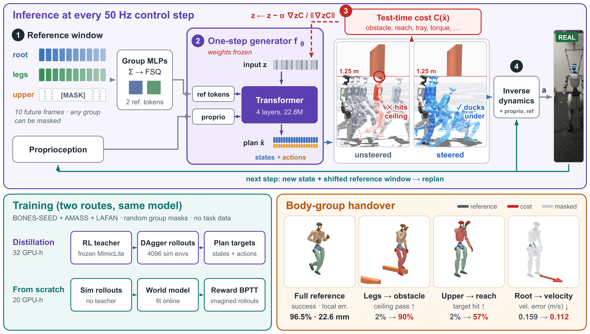

Unitree G1 · simulation in MuJoCo / mjlab
Deployment objectives often specify desired outcomes without providing revised trajectories, while parts of the original reference must still be followed. We present OneSteer, a one-step diffusion whole-body controller that combines general motion tracking with selective test-time steering. To accommodate new objectives, differentiable task costs guide optimization of the generator’s input noise with frozen weights, while body-group reference masks relax selected tracking requirements. Predicted state–action plans provide a shared interface for task optimization and feedback-conditioned execution. For nominal tracking, the model trained from scratch achieves the lowest local tracking error among the evaluated baselines on successful held-out AMASS and BONES clips. For steering, one frozen distilled controller adapts across diverse deployment objectives in simulation, raising the clean passage rate under a 1.25 m bar from 2% to 90%. On a physical Unitree G1, OneSteer completes all 27 nominal tracking trials across nine diverse whole-body motion sequences without falling. With a steering cost derived from a signed distance field built using only onboard LiDAR, it also passes under a 1.1 m low bar in four of five attempts and steps over a 12 cm hurdle without falling in all three attempts. Beyond control, prediction variation in the model trained from scratch ranks likely tracking failures without physics rollouts. This scoring method is more than 10× faster than simulation-based scoring with five rollouts per clip and guides targeted fine-tuning.
OneSteer tracking reference motions on the real robot, exported to ONNX and run on the onboard Jetson Orin NX at 50 Hz. The overhead gantry is a slack safety line.
Backflips on the real robot, plain tracking with the same controller.
The same frozen policy with a whole-body distance cost from a LiDAR map built before each run and held fixed. It passed under a 1.1 m bar in four of five attempts and stepped over a 12 cm hurdle without falling in all three (once without touching it); the unsteered controller failed every attempt. In these trials the steered policy ran on a tethered RTX 4090 computer.
Each clip shows the generator’s 0.96 s plan as ghosts. Top: without steering (grey ghosts, red where the plan hits the obstacle; gold is the reference motion). Bottom: the same reference after test-time steering (blue ghosts). The cost moves the plan itself, and the robot executes the moved plan.

Every clip is a closed-loop physics rollout. Panels run left to right. The leftmost panel is the reference or the RL teacher. The others are OneSteer, without and with steering.
The generator can take a new condition without changing its structure. We encode a 21×21 height scan around the robot into 36 terrain tokens and append them to the generator’s input sequence. The reference stays a flat-ground motion, the inverse-dynamics head is unchanged, and the model is fine-tuned with RL on stairs, slopes, boxes and rough ground.


Left: the flat-ground reference motion. Right: the terrain-conditioned model on the terrain shown. The label gives the terrain family, the difficulty level (L0–L9) and the final distance to the end of the reference path. These clips are picked from cells the model passes; the table below covers all cells.
| Success (no fall, ends within 1 m) ↑ | Flat | Stairs down | Stairs up | Slope | Boxes | Rough | All |
|---|---|---|---|---|---|---|---|
| Without terrain input | 0.87 | 0.53 | 0.16 | 0.55 | 0.19 | 0.32 | 0.43 |
| Terrain tokens switched off | 0.90 | 0.81 | 0.25 | 0.67 | 0.42 | 0.37 | 0.55 |
| With terrain tokens | 0.97 | 0.99 | 0.91 | 1.00 | 0.86 | 0.76 | 0.90 |
88 walking and jogging clips that cross the terrain, each on six terrain families and ten difficulty levels, simulation only. All rows are means of four evaluation passes (the spread of the last column is about 0.02–0.05). “Switched off” keeps the fine-tuned weights and masks the tokens, so the gain comes from the scan. The terrain model starts from the tracker trained from scratch. On flat ground it tracks nearly as before (success 0.963 vs. 0.963, local error 27.6 vs. 26.0 mm), and steering still helps on hurdles, with about half the gain of the model without terrain input. We have not run this model on the real robot.

A deterministic tracker maps a reference to an action, so the only handle at test time is the reference itself. OneSteer instead models the future. The plan is regenerated from the robot's real state at every tick, so a cost applied to the plan acts in closed loop by construction.
Plain tracking needs one generator call (3.8 ms on an RTX 4090); the controller on the robot keeps two calls (5.3 ms). The real-time steering setting guides the second call with two gradient steps (10.6–13.7 ms on an RTX 4090; 14.4 ms on the Orin NX, timed offline), within the 20 ms period of the 50 Hz loop.
All methods run in one common harness: MuJoCo sim-to-sim, official checkpoints; 150 AMASS windows (held-out subjects) and all 512 BONES windows (unseen actors). Errors are on successful clips. On BONES, 18 windows need stairs, ladders or boxes that the flat-ground harness does not have; every method fails them, so success is capped at 96.5%. Best in bold, second underlined.
| AMASS | BONES | ||||||
|---|---|---|---|---|---|---|---|
| Method | Succ. (%) ↑ | El (mm) ↓ | Eg med. (mm) ↓ | Succ. (%) ↑ | El (mm) ↓ | Eg med. (mm) ↓ | Steerable |
| SONIC (release) | 98.7 | 31.9 | 99.2 | 95.5 | 26.8 | 56.2 | no |
| SONIC (v1.1) | 98.0 | 30.5 | 126.2 | 95.1 | 27.4 | 67.8 | no |
| HoloMotion | 95.3 | 43.5 | 119.1 | 94.3 | 38.7 | 96.1 | no |
| HEFT (pmg) | 92.7 | 29.4 | 127.0 | 95.3 | 23.3 | 67.1 | no |
| Humanoid-GPT | 95.3 | 44.5 | 254.3 | 91.0 | 31.8 | 106.1 | no |
| MimicLite Huge (teacher) | 94.0 | 29.9 | 138.6 | 95.3 | 27.0 | 68.0 | no |
| OneSteer (distilled) | 95.3 | 31.4 | 135.5 | 94.9 | 27.3 | 70.0 | yes |
| OneSteer (RL from scratch) | 96.7 | 26.5 | 107.6 | 96.5 | 22.6 | 55.0 | yes |
The distilled model is on par with its RL teacher. The model trained from scratch with RL, with no teacher, has the lowest local error El on both sets, and on BONES it fails only the 18 scene-dependent windows.
79 walking motions of unseen actors in simulation, three runs per steered condition. The RL teacher tracks a reference edited with the same cost, offline or at every tick (closed loop); J: task-group joints, R: also root height and pitch. OneSteer is steered inside the generator and tracks the original reference. Hurdles: feasible passes may touch the hurdle with a foot, clean passes do not. Latency per control step on one RTX 4090. Bold: best real-time row (95th percentile within the 20 ms period of the 50 Hz loop on the robot’s Orin NX); underlined: best slower row.
| Hurdles ↑ | Low bar: clean pass ↑ | ||||||
|---|---|---|---|---|---|---|---|
| Method | feasible | clean | 1.30 m | 1.25 m | 1.20 m | Reach hit ↑ | Latency (ms) ↓ |
| Teacher, original reference | 0.48 | 0.01 | 0.36 | 0.02 | 0.00 | 0.01 | 2.5 |
| Teacher, offline edit (J) | 0.58 | 0.01 | 0.72 | 0.06 | 0.00 | 0.38 | 2.5 |
| Teacher, offline edit (J+R) | 0.47 | 0.00 | 0.55 | 0.03 | 0.00 | 0.31 | 2.5 |
| Teacher, closed-loop edit (J) | 0.57 | 0.02 | 0.87 | 0.11 | 0.02 | 0.60 | 330.5 |
| Teacher, closed-loop edit (J+R) | 0.45 | 0.00 | 0.67 | 0.04 | 0.02 | 0.60 | 277 |
| Teacher, tracks OneSteer's steered plan (J) | 0.53 | 0.10 | 0.86 | 0.74 | 0.51 | 0.37 | 10.6–13.7 |
| OneSteer, unsteered | 0.40 | 0.00 | 0.23 | 0.02 | 0.00 | 0.02 | 5.3 |
| OneSteer, 2nd call, 2 steps (real-time) | 0.68 | 0.11 | 0.95 | 0.90 | 0.56 | 0.57 | 10.6–13.7 |
| OneSteer, both calls, 2 + 2 steps | 0.66 | 0.12 | 0.95 | 0.84 | 0.52 | 0.54 | 17.2–20.5 |
| OneSteer, 6 steps + line search per call | 0.74 | 0.21 | 0.98 | 0.83 | 0.56 | 0.62 | 100–112 |
The edited reference asks for crouches the deterministic tracker cannot execute, so editing even at every tick stays at 0.11 under a 1.25 m bar, while steering the generator in real time reaches 0.90. A planner followed by a separate tracker also falls short: the teacher tracking OneSteer's own steered plan passes the 1.25 m bar in 0.74 of the trials, so the gain also relies on the action head trained with the generator.
Give the generator the same reference and proprioception with K = 8 different noise samples. If the model has learned a motion well, the eight plans agree. If it has not, they spread out. We use the 95th percentile, over time, of the per-joint standard deviation of the planned joint positions as the score. It needs only the reference and the model: no simulator rollout and no extra network. Scoring 100 clips takes about 7 seconds.
Evaluation set: 7,884 library clips, including those the base policy finds hardest. Labels: whether the RL-from-scratch tracker (60k iterations) falls in mjlab. 537 clips fail (6.8%).
Clips ranked by score, in bins of 2% of the set. Dashed line: base rate 6.8%.
All scores are simulator-free. Orange: needs only the diffusion generator. Grey: needs a critic, a world model or the library.
| Top | Noise spread | Plan deviation | Critic | Spread + critic |
|---|---|---|---|---|
| 1% | 0.91 / 0.13 | 0.87 / 0.13 | 1.00 / 0.15 | 1.00 / 0.15 |
| 2% | 0.91 / 0.27 | 0.68 / 0.20 | 0.85 / 0.25 | 0.97 / 0.28 |
| 3% | 0.79 / 0.35 | 0.58 / 0.25 | 0.74 / 0.33 | 0.86 / 0.38 |
| 5% | 0.68 / 0.50 | 0.44 / 0.33 | 0.57 / 0.42 | 0.67 / 0.49 |
| 10% | 0.41 / 0.61 | 0.35 / 0.51 | 0.37 / 0.54 | 0.41 / 0.60 |
| 20% | 0.24 / 0.69 | 0.22 / 0.64 | 0.23 / 0.67 | 0.24 / 0.71 |
Precision / recall. Imagined world-model rollouts reach 0.93 at the top 2% and 0.71 / 0.52 at 5%, close to the noise spread. A threshold picked on half of the chunks (top ~6%) gives precision 0.61 and recall 0.49 on the other half.
Failure rate when each score is split at its median. Rarity is the kNN distance of a clip's reference statistics to the rest of the library.
Combined AUC 0.87. Rarity alone ranks broadly (0.81), but the spread is twice as precise at the very top.
Fine-tune the RL-from-scratch tracker for 8k iterations on the 329 clips a score ranks hardest, then re-run 7,788 library clips in simulation and compare clip by clip with the base model (501 failures). To keep what it already masters, half of the environments replay the library with a consolidation loss toward the frozen base and keep their RL return. Mean ± s.d. over three training seeds (base model: two re-evaluations).
| Clips selected by | Failures fixed ↑ | … outside the list ↑ | Broken ↓ | Library failures ↓ | Unseen families ↑ | Seen families ↑ |
|---|---|---|---|---|---|---|
| None (base re-evaluated) | 12.2±4.8% | 12.2±4.8% | 0.8±0.3% | 6.4% | 24.5±2.6% | 9.7±2.3% |
| Random clips | 26.9±2.0% | 27.0±2.0% | 1.6±0.2% | 6.2±0.1% | 34.8±3.8% | 17.2±6.5% |
| Kinematic rarity | 30.5±3.1% | 29.8±2.8% | 1.3±0.1% | 5.7±0.3% | 35.2±3.7% | 19.9±0.9% |
| RL critic value | 41.2±2.3% | 41.2±3.3% | 1.3±0.1% | 5.0±0.2% | 37.9±2.8% | 31.7±3.4% |
| Imagined world-model rollout | 46.3±2.8% | 42.1±4.1% | 1.3±0.1% | 4.7±0.2% | 43.0±1.0% | 39.2±0.9% |
| Noise spread (ours) | 48.3±4.2% | 44.2±5.6% | 1.7±0.2% | 5.0±0.4% | 47.9±2.3% | 38.7±4.3% |
Unseen and seen families: success on held-out failures of families the lists never contain, or of trained families. The noise spread fixes nearly twice as many failures as random clips at the same budget and generalizes best to unseen families; imagined rollouts are comparable on the library but need a policy rollout and a learned world model. The RL return on mastered clips keeps regressions near the noise floor: with the consolidation loss alone, 4.6% of tracked clips break.
@misc{onesteer2027,
title = {OneSteer: Unlocking Steerable General Humanoid Motion Tracking
via One-Step Diffusion Whole-Body Control},
author = {Anonymous},
year = {2027}
}